2020 Buckskin Stallion · 15.1 HH · 6-Panel N/N
The Goodbye Lane × Rosas Cantina CC, by Corona Cartel
A $137,590 earner in his own right — which is the part most young stallions can’t say. He is by the $19 million sire The Goodbye Lane and out of Rosas Cantina CC, the NFR qualifier whose $734,000 was earned at the hardest rodeos in the country. He won the first futurity he ever entered and kept going.
Fresh and frozen are waitlist only while he is showing. How ICSI works →
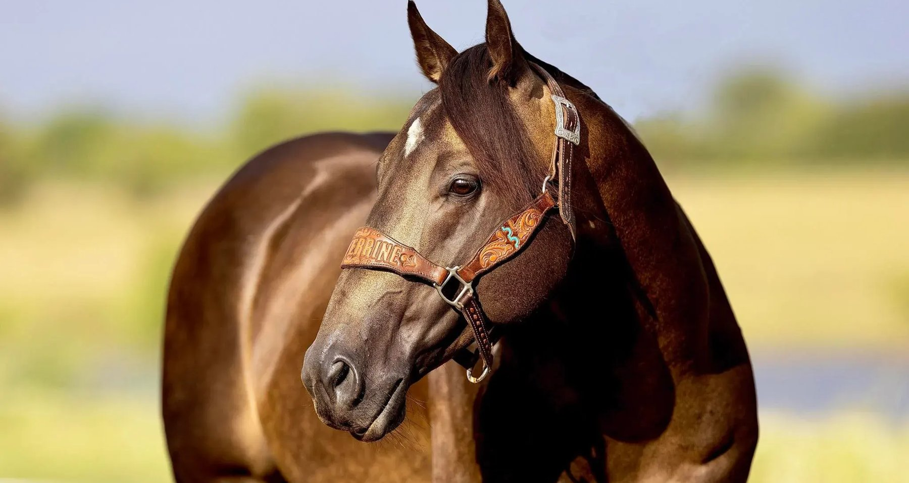
The Horse
$137,590, and he is six.
Kit McCall Johnson walked him into the first futurity of his life and left with the championship. He has not stopped since.
At the March Into Spring Fling in Shawnee, Oklahoma, Wolverrine won a 62-horse futurity by nearly three-tenths on the aggregate. It paid $7,362, and it was the first futurity he and Johnson had entered together. At the 2026 Young Guns League Derby he placed in both rounds and the aggregate, worth $16,400. He added $6,190 in the open at the 2026 Pink Buckle. That put him at $137,590 as of October 2026.
Kit and Isaac Johnson developed him and campaign him today. The horse running now is the one they built.
He is honest in the turn, he is broke, and he kept his mind in a pen full of green horses and loud crowds. None of that shows up in an earnings line, and it is what decides how many people in one family get to ride him.
Speed out of a mare like Rosa is not rare. Speed out of a mare like Rosa in a horse this broke is a very short list.
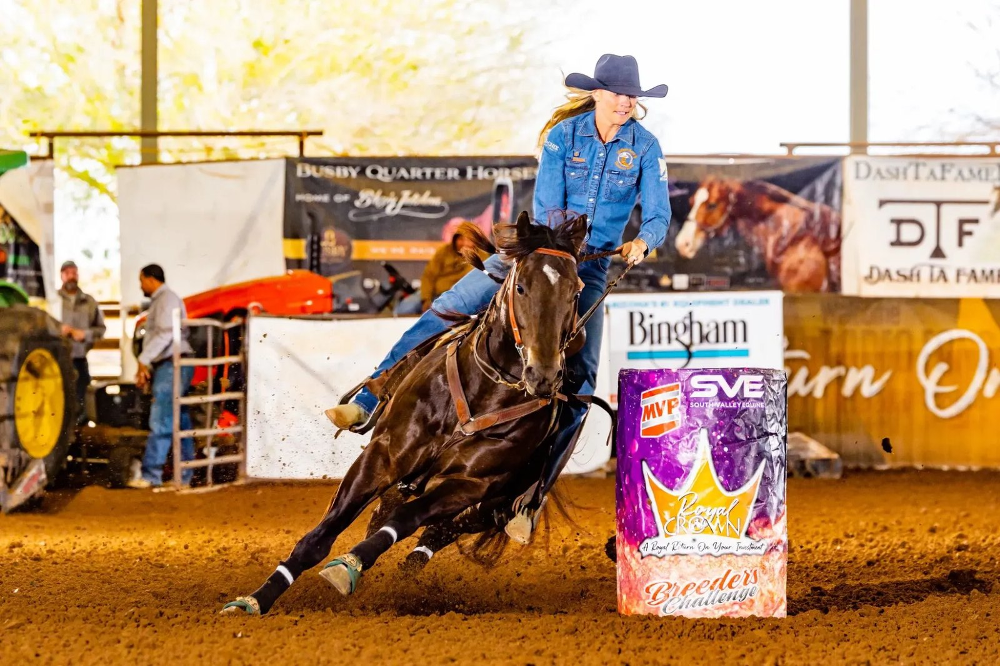
assets/images/wolverrine-running.jpg
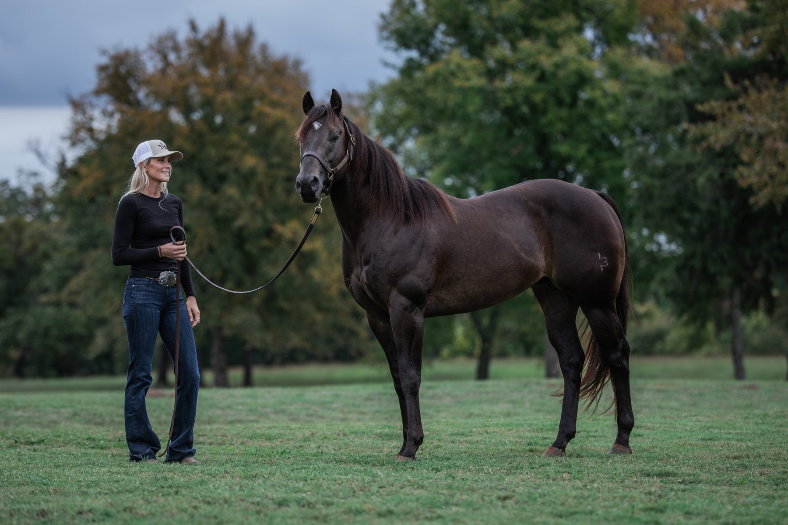
Record
- Lifetime Lifetime earnings As of October 2026 $137,590
- 2025 March Into Spring Fling Futurity Champion Shawnee, Okla. · 62 entries · Kit McCall Johnson · first futurity entered $7,362
- 2026 Young Guns League Derby Placed in both rounds and the aggregate · Kit McCall Johnson $16,400
- 2026 Pink Buckle — Open Guthrie, Okla. · Kit McCall Johnson $6,190
Earnings per EquiStat. Record current as of publication.
Pedigree
Speed on top. Proof on the bottom.
Dash Ta Fame appears twice — once behind his sire, once behind his dam. First Down Dash shows up three times. And the cream gene that makes him buckskin traces straight down the bottom side, through Dash Ta Vanila and SX Frenchmans Vanila. Wolverrine is 6-panel N/N.
| The Goodbye Lane 2001 brown · $19M progeny | Lanes Leinster | Leinster House (TB) |
| Lanes Star Miss | ||
| Swift Goodbye SI 110 · stakes winner | Dash Ta Fame | |
| Fiesta On The Fly | ||
| Rosas Cantina CC 2010 buckskin · $734,000 LTE | Corona Cartel 1994 · $50M+ sire | Holland Ease |
| Corona Chick | ||
| Dash Ta Vanila 2005 palomino | Dash Ta Fame | |
| SX Frenchmans Vanila |
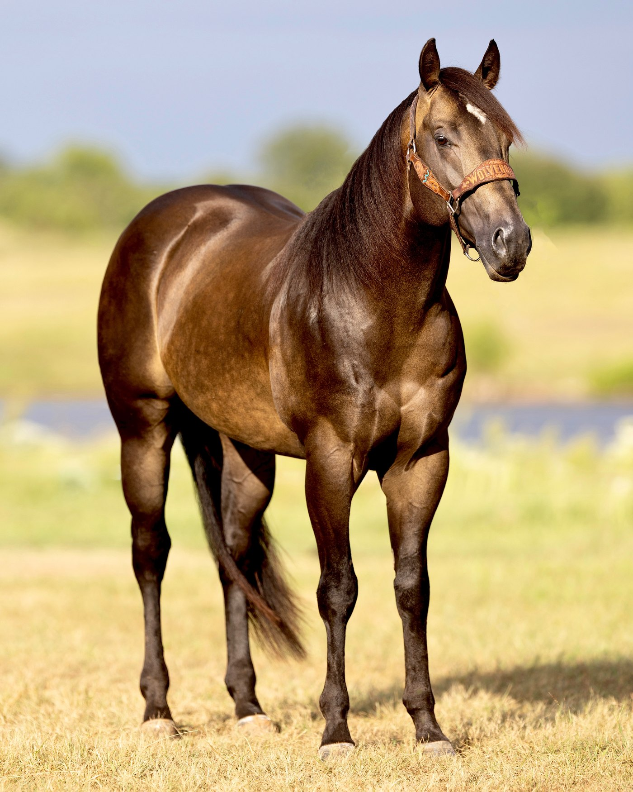
Three generations shown. Rosas Cantina CC on Quarter Horse Resource → · Wolverrine on QStallions →
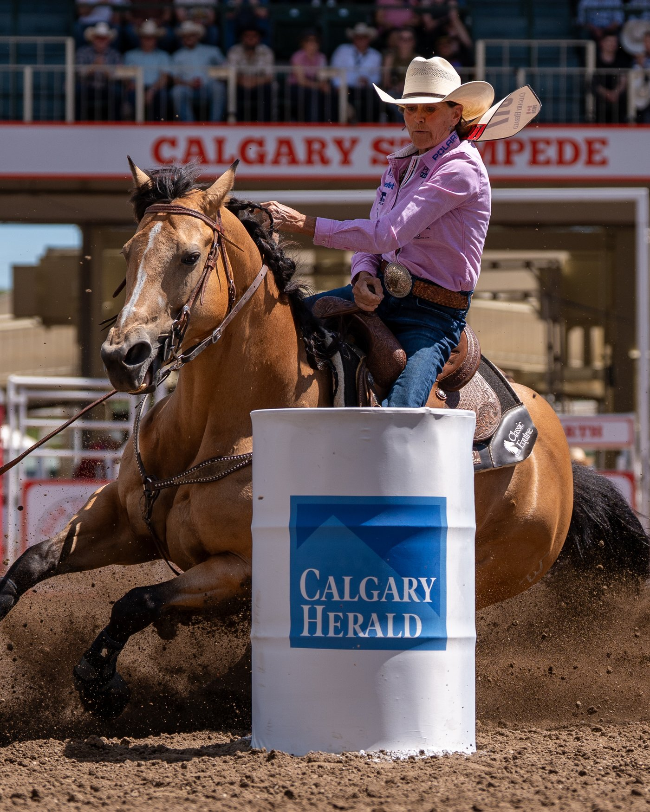
His Dam
Rosas Cantina CC
A National Finals Rodeo qualifier with $734,000 earned. The 2025 Daddy of ’Em All. And a produce record that already includes a Top 50 barrel sire.
Bred by Alan Woodbury of Woodbury Performance Horses in Dickinson, North Dakota, the 2010 buckskin mare by Corona Cartel and out of Dash Ta Vanila became one of the most recognizable horses in professional barrel racing under Lisa Lockhart — the first WPRA member to reach $4 million in career earnings.
At Cheyenne Frontier Days in 2025, Rosa made four clean runs through the hardest setup in rodeo and stopped the clock at 17.03 in the short round to win the championship and roughly $22,000.
Here is the part that matters to a breeder: Rosa does not just run. She produces. Twenty-five AQHA foals, $518,906 in progeny earnings, and Wolverrine’s half-brother Jaguarr — her son by Dash Ta Fame — ranked among the Top 50 barrel racing sires in 2025 off limited crops, after his own arena career was cut short. Jaguarr has since died. Wolverrine is the son of hers still standing.
A mare can be fast. A mare can be a producer. Rosa is both, and the market has already confirmed it with one son. Wolverrine is the other.
Progeny earnings per EquiStat.
His Sire
The Goodbye Lane
$19 million in progeny earnings. No. 2 all-time among leading barrel racing sires. Twelve-time leading sire.
The 2001 brown stallion by Lanes Leinster and out of Swift Goodbye, by Dash Ta Fame, was bred and raced by Robert Morgan of Rigby, Idaho, and covered only a handful of mares before Mark Jarvis bought him in 2012. He has been rewriting the sire lists ever since from Jarvis Ranch in Spanish Fork, Utah.
He sired three of the top 10 all-time leading money earners — Force The Goodbye, who broke four round records at the 2024 NFR and won the world championship with $457,808 on the year, Hello Stella and MJ Segers Fast Lane. In 2025 alone his get earned $4,776,856 across 267 money earners. His five-year-olds brought home $1.9 million — double any other sire of five-year-olds in the country.
Which is the argument for breeding to a young son now. The Goodbye Lane is 25 years old. His sons are the access point.
Breeding
ICSI now. Fresh and frozen by waitlist.
Wolverrine is ICSI only right now. He is still competing, and a stallion who is hauling can’t be collected on a schedule, so fresh and frozen contracts open as his show calendar allows — we take those by waitlist and work down it in order. ICSI is $2,000 for 2027 and available today. If ICSI is new to you, read this before you decide it’s out of reach: for most mare owners it asks less of the mare than a live cover season.
Your mare stays home
No hauling her to Texas, no layup bill, no missed season. A veterinarian aspirates eggs from your mare at a clinic near you. She can keep competing.
The lab does the work
A single Wolverrine sperm is injected directly into each egg. Because ICSI needs so little semen, a stallion who is still hauling can breed a book of mares without coming off the road. That is exactly why ICSI is open and fresh and frozen are not.
A recipient mare carries it
The embryo is transferred to a recipient mare and you get your foal without risking your good mare’s body or her year. Solo Select handles recipient mares and foaling in house.
- Book it
- Open the 2027 contract at Solo Select → Contracts and payment are handled on Solo Select’s portal.
- Fresh & frozen — waitlist
- $3,500 breed fee · 2027. Released as his competition schedule allows, in waitlist order. Add your mare to the waitlist →
- Barrel incentives
- Ruby Buckle · Royal Crown · Royal Crown Canada · Young Guns League · Breeders Challenge · Tomorrow’s Legends · Gold Rush · The Breeders Elite Incentive
- Roping incentive
- Solo Select Roping Incentive
- Standing at
- Solo Select Horses · Gainesville, Texas
(903) 436-6615 · stallions@soloselect.com - Owned by
- Mill Iron Livestock · Del & Tyson Bieleny · Czar, Alberta
(780) 385-4060 · millironlivestock@gmail.com
What the nominations are worth
Wolverrine is nominated to eight barrel racing incentive programs. Between them they pay out millions of dollars, and a foal of his is eligible to run for it on top of whatever the open pays. That pool only widens from here — his first full crops are just now reaching the ground, and the nominations keep expanding as new programs open.
He is also nominated to the Solo Select Roping Incentive. That is an unusual place to find a barrel-bred stallion, and it is the point: a Wolverrine foal that goes down the rope horse road has futurity money to run for as well, and you are not selling him into one market. Solo Select’s incentive paid out more than $580,000 across its first roping futurities.
What you should ask us
We would rather answer these up front than have you guess:
- What does the full cycle cost, start to foal on the ground?
- Should I be on the frozen/cooled waitlist instead, and how long is it?
- Which ICSI labs and vets do you recommend in my area?
- How many embryos should I expect from one aspiration?
- What happens if we don’t get a viable embryo?
- Which incentive programs am I eligible to nominate my foal to?
Fees and terms are subject to change. A signed contract governs all breedings. ICSI contracts are handled by Solo Select Horses.
About the Owners
A family ranch in Czar, Alberta, owned and operated by Del and Tyson Bieleny and family.
Mill Iron Livestock raises and sells Quarter Horses — prospects and performance horses, year round — out of a breeding program built on athleticism, bone and good minds. It is a working family operation, not a marketing label, and the horses are handled accordingly.
The Bielenys also stood Jaguarr, the Dash Ta Fame son of Rosas Cantina CC and Wolverrine’s half-brother. Jaguarr has died, and what is left of him is a finite number of frozen straws — his first limited foal crop brought in $156,000 in its five-year-old year alone. Standing two sons of the same mare was not an accident of the market. It was a program with a thesis, and one half of it cannot be replaced.
Their commitment is stated plainly: increase the value of every foal he sires, and keep the horse himself winning. It is why he is still hauling rather than standing full time, why fresh and frozen run on a waitlist instead of a schedule, and why the incentive nominations keep growing rather than holding still. The arena and the breeding barn are not two separate projects here.
Standing at Solo Select Horses
Wolverrine stands at Solo Select Horses in Gainesville, Texas — a full-service performance horse operation handling stallion management, ICSI and reproduction, recipient mares, foaling, sale fitting and breeding consultation under one roof.
All breeding logistics, collection scheduling and ICSI coordination run through Solo Select.
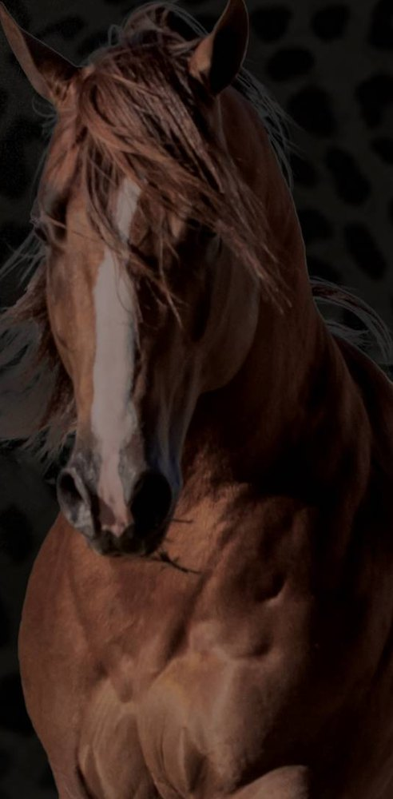
Jaguarr — limited frozen
Wolverrine’s half-brother by Dash Ta Fame, the all-time leading barrel sire, out of the same mare. 15 hands, 6-panel N/N, AQHA/APHA. Jaguarr has passed away. His frozen semen is limited and will not be replaced. His first limited foal crop earned $156,000 in its five-year-old year:
- Nittyy Grittyy — $72,997 LTE. 2024 BFA Futurity Champion, 2025 Diamond Classic Reserve Champion. Wade & Jennifer Harris.
- Shiverrs — Jaguarr’s second-highest earner following the Pink Buckle. Owned, trained and campaigned by Lynn Kohr.
- Im On Firre — $37,950 LTE. 2026 Royal Crown OKC Day 2 Open 3D Champion, 2026 Tomorrow’s Legends OKC Open 3D Champion. Storm Rider LLC.
- Wyldcat — $17,319 LTE. 2026 Limited Open Hackamore World Champion. Mill Iron Livestock.
ICSI stud fee $1,500 USD · Jaguarr at Solo Select → · Ask about remaining straws →
Gallery
Wolverrine
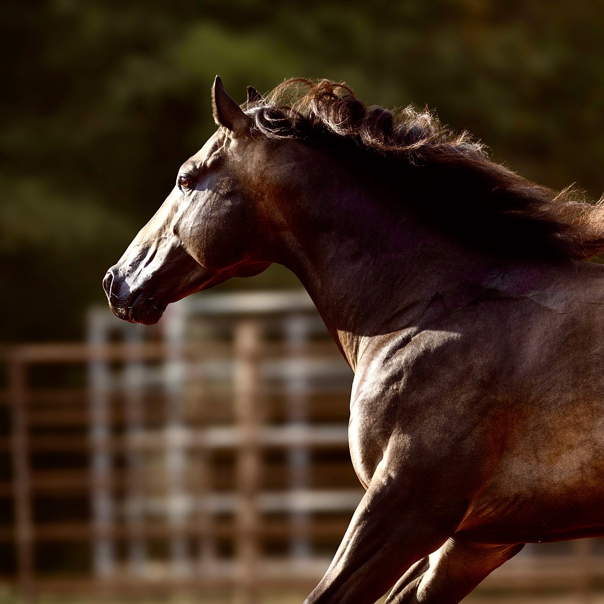
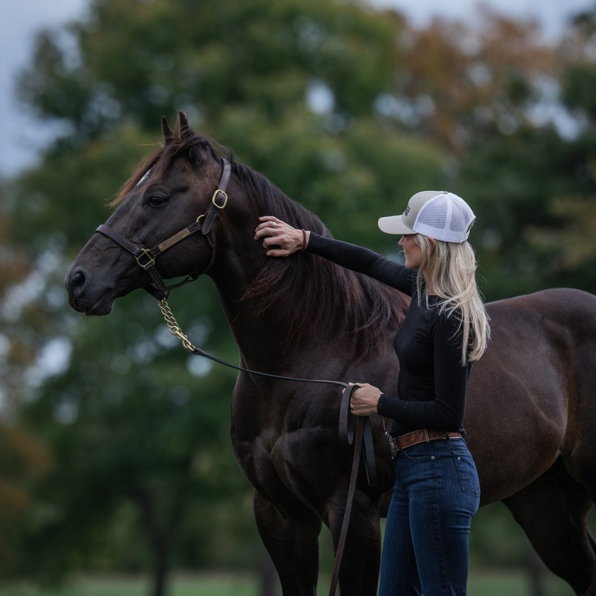
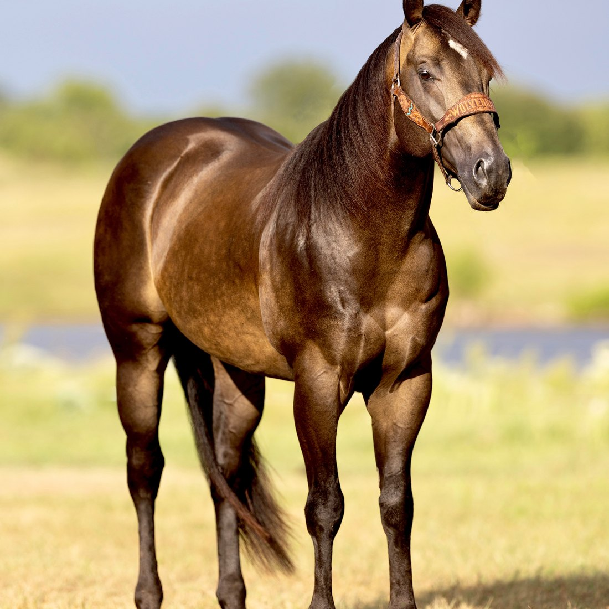
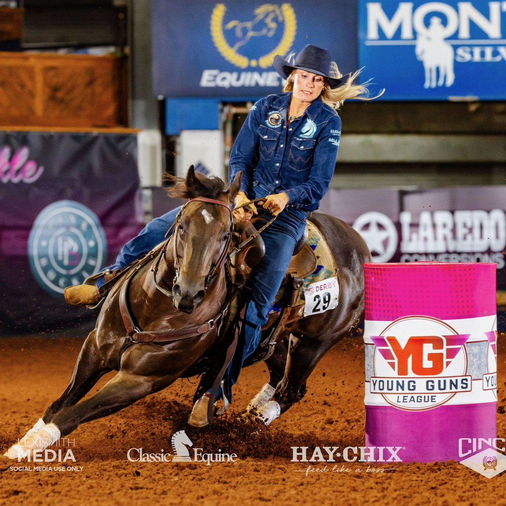
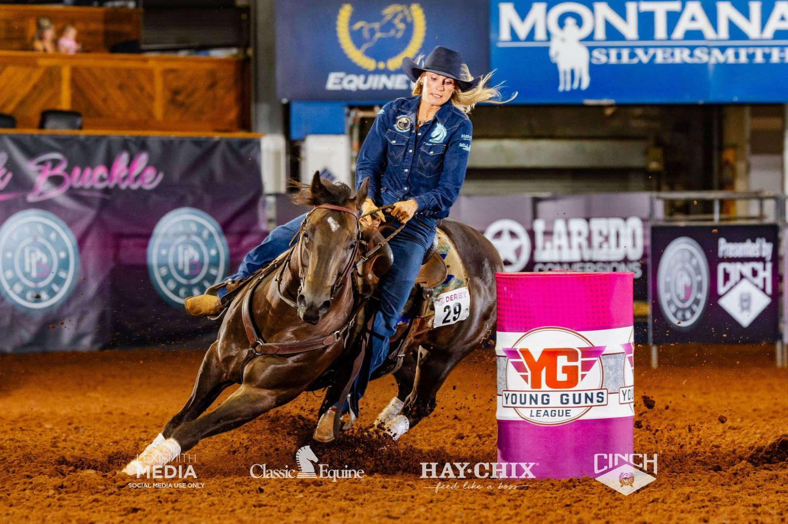
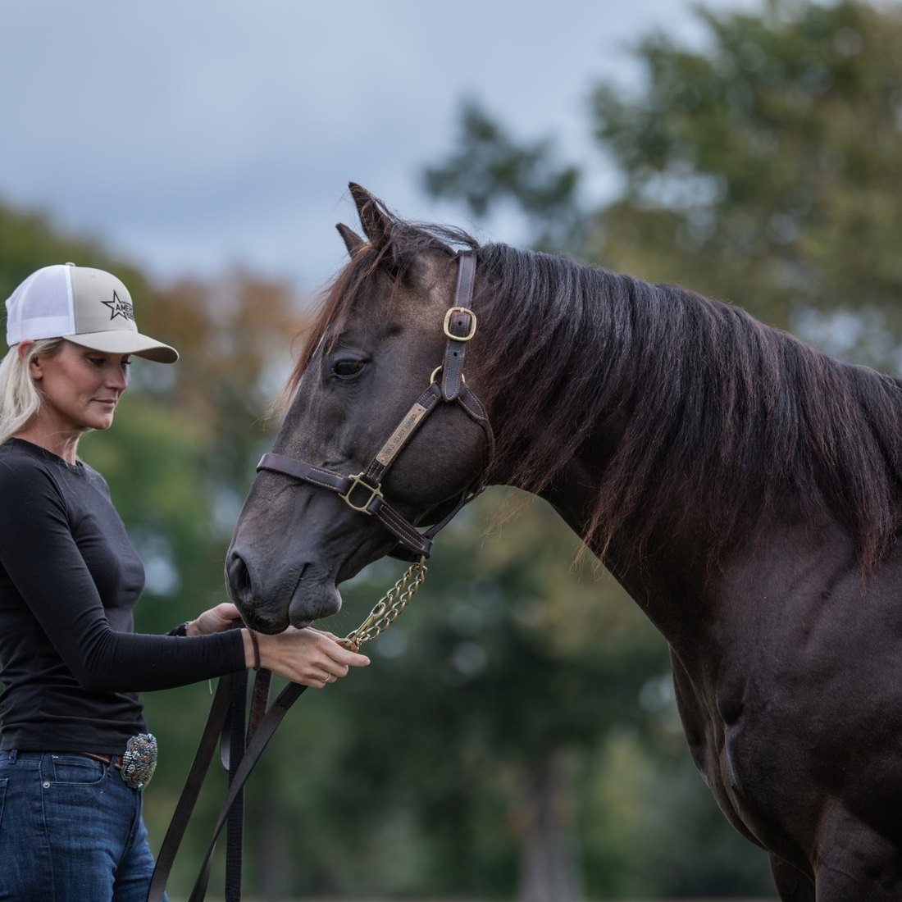
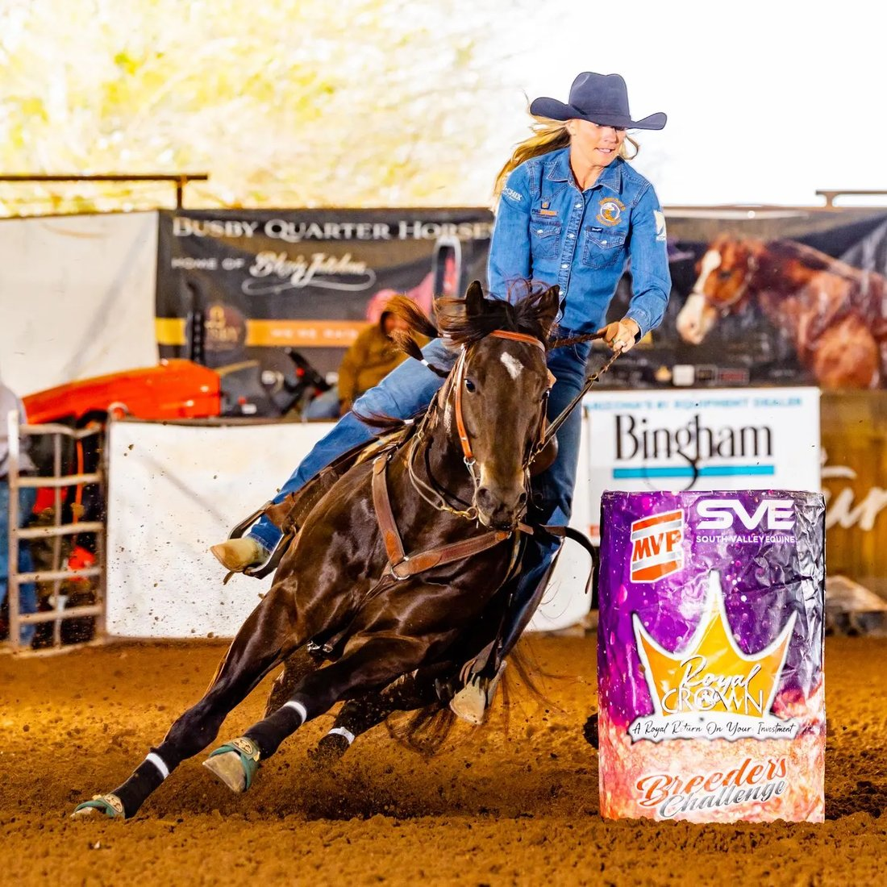
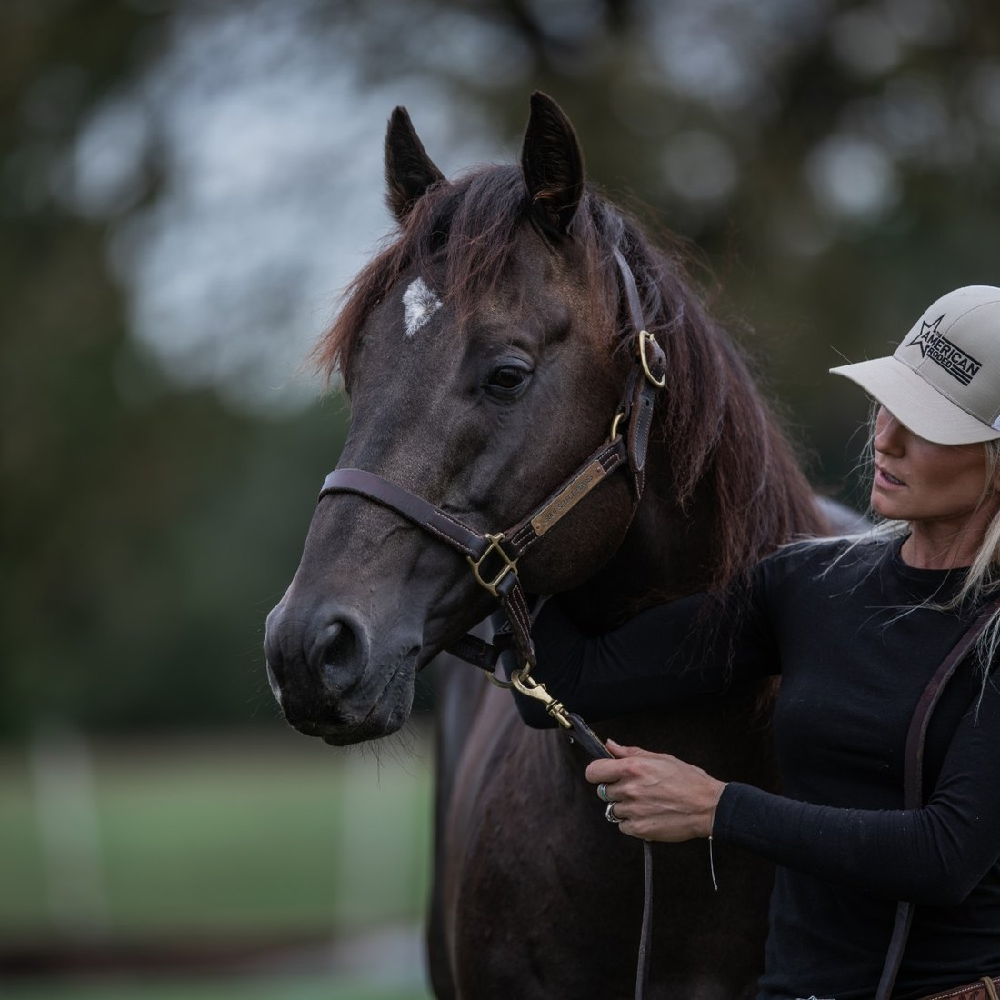
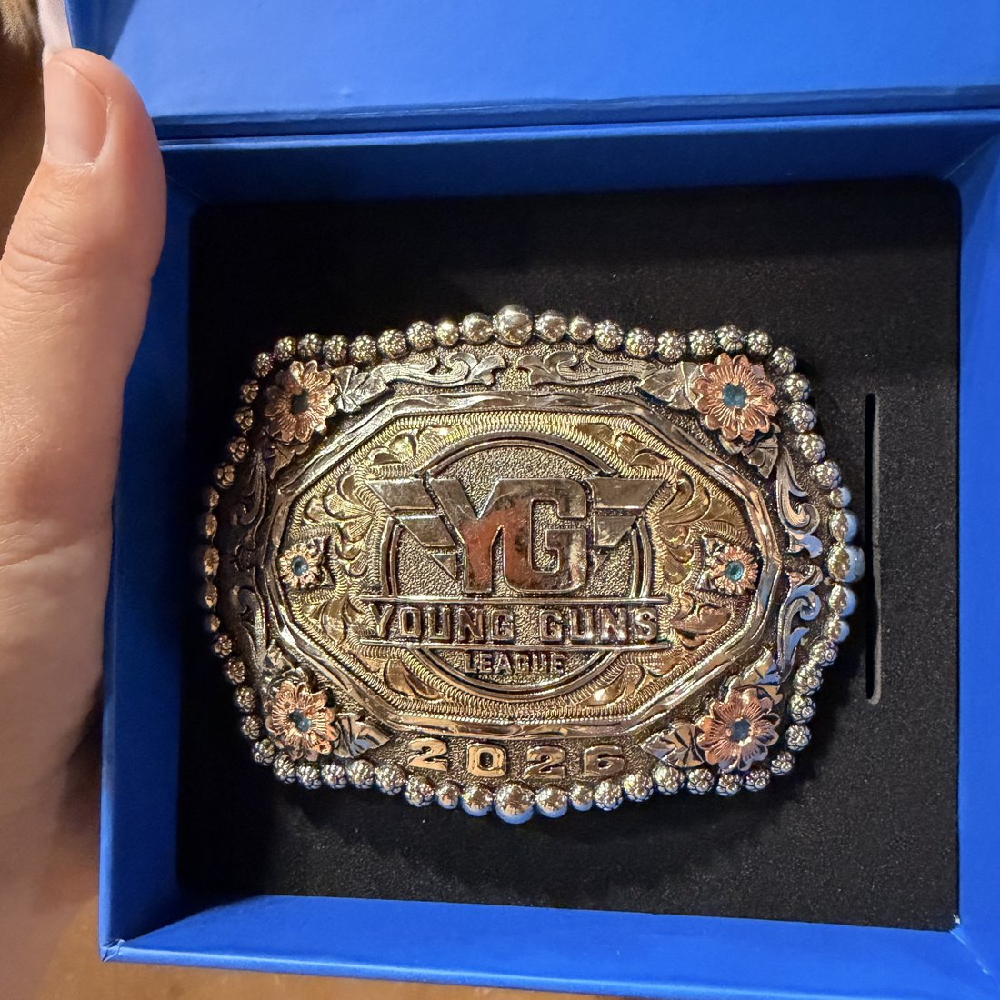
Arena photography by LexiSmith Media.
Book a Breeding
Breed to Wolverrine
Booking and the waitlist both run through Solo Select — open the ICSI contract → or join the fresh/frozen waitlist →. Got a question first? Ask it here.